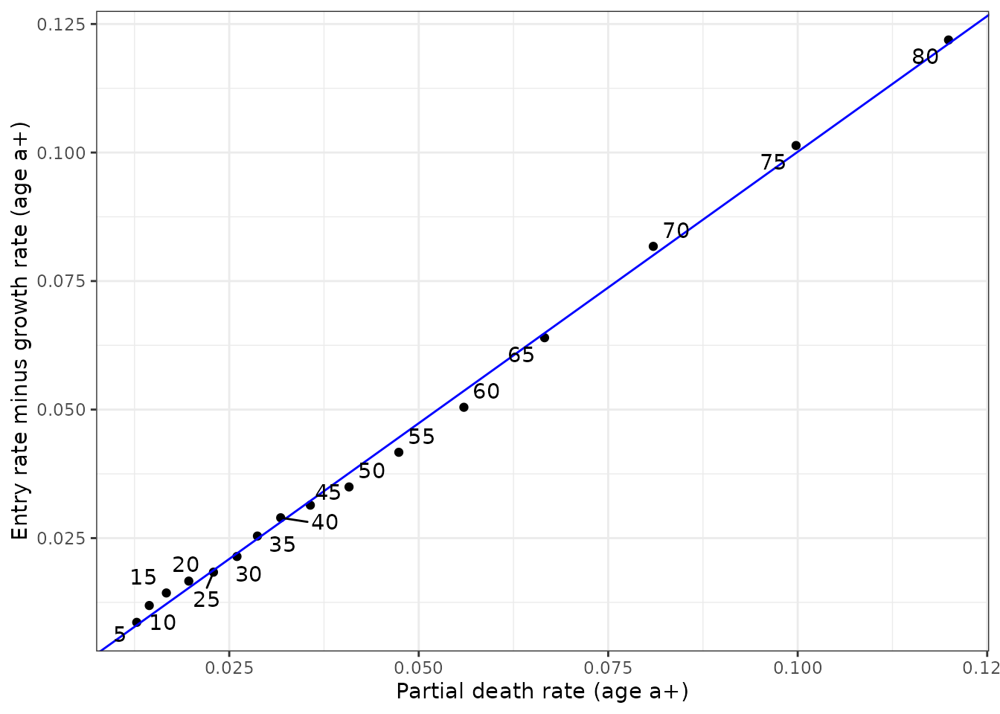

General Growth Balance (GGB)
This vignette describes the methods for the General Growth Balance Death Distribution Method (DDM) for estimating completeness of death registration. These methods are not original to this package, but are summarized here. For original sources, see the references section of this vignette.
Input data
Input data required for GGB is:
- Age-specific population counts from two censuses (recommended < 20 years apart)
- Age-specific death counts from death registration in between the two censuses
Age-specific death counts can come from one or many years of death registration, but should be converted to average annual counts.
This package includes an example dataset, which matches the example used but the IUSSP.
The example dataset is for South African males, between 2001 and 2007:
head(zaf_2001_2007)
#> location pop1 pop2 deaths migrants age_start sex date1
#> <char> <num> <num> <num> <num> <num> <char> <Date>
#> 1: South Africa 2223006 2505744 197911.88 10605.138 0 male 2001-10-10
#> 2: South Africa 2425066 2560642 15566.49 2848.486 5 male 2001-10-10
#> 3: South Africa 2518985 2452339 11207.11 5152.799 10 male 2001-10-10
#> 4: South Africa 2453156 2553293 25472.64 16573.504 15 male 2001-10-10
#> 5: South Africa 2099417 2362519 54959.64 14802.771 20 male 2001-10-10
#> 6: South Africa 1899275 2033165 102802.12 4714.013 25 male 2001-10-10
#> date2
#> <Date>
#> 1: 2007-02-15
#> 2: 2007-02-15
#> 3: 2007-02-15
#> 4: 2007-02-15
#> 5: 2007-02-15
#> 6: 2007-02-15As-is, these data are for total deaths in the interval, so we need to
divide deaths by the time between censuses in years. Note that in the
ggb function, this happens internally, via the
input_deaths_annual argument.
# convert to average annual values
dt <- copy(zaf_2001_2007)
dt[, t := as.numeric(difftime(date2, date1, units = "days")) / 365]
dt[, deaths := deaths / t]
dt[, migrants := migrants / t]The Demographic Balancing Equation
At the core of the GGB method is the demographics balancing equation, which says that in a stable population (constant birth rate and age-specific mortality rate over time), population growth rate () is equal to birth rate () minus death rate () plus migration rate (). In a closed population, this simplifies to: .
This base form of the demographic balancing equation looks at all ages and uses birth rate as the entry rate into the population. But, we can think of an analogous format for any age , where “births” become birthdays at age and the population of interest is the population aged . Then, .
From two censuses, we can approximate and for a collection of ages . True death rate, , itself is a function of observed death count, observed population counts, death registration completeness, and census coverage. We leverage these relationships, along with orthogonal regression to summarize across ages, to estimate completeness. The following sections will describe each component in more detail.
A bit on notation
As described, we notate , , , and to be the growth, birth (or entry), death, and migration rates in the population aged and over.
Additionally:
- : length of age interval in data
- : population at census 1
- : population at census 2
- : mean population between census 1 and census 2
- : average annual deaths recorded between censuses
And we use traditional demographic notation where stands for some demographic measure, , for the age interval to .
Entry rate, b(a+)
We can estimate the entry rate into the population age such that: Where average annual birthdays aged is approximated as the geometric mean of and divided by the length of the age interval (): And is approximated as the geometric mean of and : Note that if we assume census coverage is the same for all age groups, coverage does not impact this entry rate term. This is because a coverage scalar applied to and would cancel in the numerator and denominator when we divide birthdays by .
On our example dataset, we get:
#> age_start pop1 pop2 deaths bdays_age_a pop_age_aplus entry_rate
#> <num> <num> <num> <num> <num> <num> <num>
#> 1: 0 2223006 2505743.50 36969.209 NA 22370888.06 NA
#> 2: 5 2425066 2560641.90 2907.763 477171.76 20010358.41 0.02384624
#> 3: 10 2518985 2452338.80 2093.447 487732.85 17518164.40 0.02784155
#> 4: 15 2453156 2553292.90 4758.196 507216.19 15028165.98 0.03375104
#> 5: 20 2099417 2362519.00 10266.258 481482.20 12523907.19 0.03844505
#> 6: 25 1899275 2033165.30 19203.056 413205.12 10296820.47 0.04012939
#> 7: 30 1594624 1875482.60 27195.310 377468.26 8331031.27 0.04530871
#> 8: 35 1441657 1548185.20 27253.574 314246.61 6601347.79 0.04760340
#> 9: 40 1233813 1306899.80 25392.383 274525.14 5106830.06 0.05375647
#> 10: 45 967744 1104293.70 22604.188 233451.66 3835804.19 0.06086120
#> 11: 50 769627 888042.40 20763.694 185407.41 2801920.98 0.06617153
#> 12: 55 552402 708812.30 18092.043 147718.80 1975119.22 0.07478981
#> 13: 60 444592 491870.60 16798.678 104251.68 1348784.17 0.07729308
#> 14: 65 304835 394304.60 15474.730 83738.80 880987.26 0.09505109
#> 15: 70 232604 241976.30 13642.915 54318.63 533699.28 0.10177760
#> 16: 75 136466 163112.36 11930.800 38956.69 296210.60 0.13151686
#> 17: 80 90856 87698.19 8996.670 21879.51 147004.34 0.14883579
#> 18: 85 45920 70299.38 8629.179 15983.89 56816.79 0.28132340Growth rate, r(a+)
The growth rate can be approximated as:
Alternatively, it can be approximated as:
with computed as it is described above.
The first method for estimating growth rate comes from Hill, You, and Choi (2009). The second is used by IUSSP and Tim Riffe’s DDM package.
Now, consider the case where census 1 and census 2 have coverage and such that true populations are and . Coverage is assumed to be the same for all age groups. Let be growth rate as estimated in the first equation above, and let be growth rate that incorporates and . Using the first growth equation, we get: when we apply coverage scalars to the observed values.
With some algebra, we can get:
and we can think of here as the error in growth rate when estimated using and . We will use this later in the demographic balancing equation.
In our example dataset, we find growth rate () to be:
#> age_start pop1 pop2 deaths growth_rate
#> <num> <num> <num> <num> <num>
#> 1: 0 2223006 2505743.50 36969.209 0.01598227
#> 2: 5 2425066 2560641.90 2907.763 0.01522950
#> 3: 10 2518985 2452338.80 2093.447 0.01595043
#> 4: 15 2453156 2553292.90 4758.196 0.01941854
#> 5: 20 2099417 2362519.00 10266.258 0.02180598
#> 6: 25 1899275 2033165.30 19203.056 0.02175217
#> 7: 30 1594624 1875482.60 27195.310 0.02388167
#> 8: 35 1441657 1548185.20 27253.574 0.02219924
#> 9: 40 1233813 1306899.80 25392.383 0.02479798
#> 10: 45 967744 1104293.70 22604.188 0.02944955
#> 11: 50 769627 888042.40 20763.694 0.03121820
#> 12: 55 552402 708812.30 18092.043 0.03309555
#> 13: 60 444592 491870.60 16798.678 0.02684282
#> 14: 65 304835 394304.60 15474.730 0.03107115
#> 15: 70 232604 241976.30 13642.915 0.02002466
#> 16: 75 136466 163112.36 11930.800 0.03015372
#> 17: 80 90856 87698.19 8996.670 0.02694259
#> 18: 85 45920 70299.38 8629.179 0.07954949Death rate, d(a+)
Given that death rate is by definition deaths over person-years, we can get an incomplete death rate as follows:
where the numerator is deaths from the data and the denominator is population as estimated above.
When death registration is incomplete, true deaths are where is death registration completeness. Additionally, the denominator is estimated from the two censuses and may be biased if one census has higher coverage.
To estimate this bias from censuses, we’ll go back to how we estimated , apply and scalars to census 1 and census 2, and see how that modifies our population estimate. Let be a version of population that accounts for and and remain population as estimated above. So:
Next, go back to the formulation of . Substitute for the numerator and substitute for in the denominator. Doing this, we get:
Regression to estimate completeness
Putting this together by using the balancing equation, and error components for growth rate and death rate as described, we can evaluate:
Where:
At this point, the intercept and slope are the only unknowns, so this is a system we know how to solve. We use all values of within a chosen range (“age trim”), combined with orthogonal regression, to estimate slope and intercept. Orthogonal regression for has an analytical solution as follows:
Then, solve for completeness using slope, intercept, and the relationships above, as follows:
Solve for relative census coverage:
Use to select and assuming the more complete census is 100% complete
Then:
Using this package for GGB
To use this package for GGB, use the ggb function:
results <- ggb(
dt,
age_trim_lower = 5,
age_trim_upper = 85,
id_cols = c("location", "sex", "age_start"),
migration = FALSE,
input_deaths_annual = TRUE
)This will return a list of two objects. The first has your input data with GGB component columns added:
head(results[["dt"]])
#> location pop1 pop2 deaths migrants age_start sex date1
#> <char> <num> <num> <num> <num> <num> <char> <Date>
#> 1: South Africa 2223006 2505744 36969.209 1981.0007 0 male 2001-10-10
#> 2: South Africa 2425066 2560642 2907.763 532.0866 5 male 2001-10-10
#> 3: South Africa 2518985 2452339 2093.447 962.5238 10 male 2001-10-10
#> 4: South Africa 2453156 2553293 4758.196 3095.8694 15 male 2001-10-10
#> 5: South Africa 2099417 2362519 10266.258 2765.1030 20 male 2001-10-10
#> 6: South Africa 1899275 2033165 19203.056 880.5602 25 male 2001-10-10
#> date2 t age_length bdays_age_a pop_age_aplus entry_rate
#> <Date> <num> <num> <num> <num> <num>
#> 1: 2007-02-15 5.353425 5 NA 22370888 NA
#> 2: 2007-02-15 5.353425 5 477171.8 20010358 0.02384624
#> 3: 2007-02-15 5.353425 5 487732.9 17518164 0.02784155
#> 4: 2007-02-15 5.353425 5 507216.2 15028166 0.03375104
#> 5: 2007-02-15 5.353425 5 481482.2 12523907 0.03844505
#> 6: 2007-02-15 5.353425 5 413205.1 10296820 0.04012939
#> growth_rate death_rate entry_minus_growth open_age
#> <num> <num> <num> <num>
#> 1: 0.01598227 0.01309613 NA 85
#> 2: 0.01522950 0.01279352 0.008616735 85
#> 3: 0.01595043 0.01444758 0.011891121 85
#> 4: 0.01941854 0.01670208 0.014332501 85
#> 5: 0.02180598 0.01966187 0.016639064 85
#> 6: 0.02175217 0.02291748 0.018377224 85The second has completeness by each set of ID columns, as well as summaries such as slope, intercept, and relative census coverage:
print(results[["completeness"]])
#> location sex slope intercept completeness k1_over_k2
#> <char> <char> <num> <num> <num> <num>
#> 1: South Africa male 1.05593 -0.005452145 0.9333123 0.9712342You can also plot the linear fit using the plot_ggb
function:
id_cols_subset = list(
location = "South Africa",
sex = "male",
age_start = seq(5, 80, 5)
)
gg <- plot_ggb(results, id_cols_subset = id_cols_subset)
print(gg)
In this plot, the x-axis is the incomplete death rate (). The y-axis is the entry rate minus estimated growth rate, . Each dot represents one age value, , and is labeled with that value. The slope and intercept of the trend line are the slope and intercept described above which are used to estimate completeness. This plot can be used to evaluate age-trim selection, based on outliers. Trends in residuals can also indicate potential error due to migration.
References
- Bennett NG, Horiuchi S. Mortality estimation from registered deaths in less developed countries. Demography. 1984 May;21(2):217-33.
- Dorrington RE. 2013. “The Generalized Growth Balance Method”. In Moultrie TA, RE Dorrington, AG Hill, K Hill, IM Timæus and B Zaba (eds). Tools for Demographic Estimation. Paris: International Union for the Scientific Study of Population. http://demographicestimation.iussp.org/content/generalized-growth-balance-method. Accessed May 27 2021.
- Hill K, You D, Choi Y. Death distribution methods for estimating adult mortality: sensitivity analysis with simulated data errors. Demographic Research. 2009 Jul 1;21:235-54.
- Murray CJ, Rajaratnam JK, Marcus J, Laakso T, Lopez AD. What can we conclude from death registration? Improved methods for evaluating completeness. PLoS Med. 2010 Apr 13;7(4):e1000262.
- Tim Riffe, Everton Lima, and Bernardo Queiroz (2017). DDM: Death Registration Coverage Estimation. R package version 1.0.0. https://CRAN.R-project.org/package=DDM